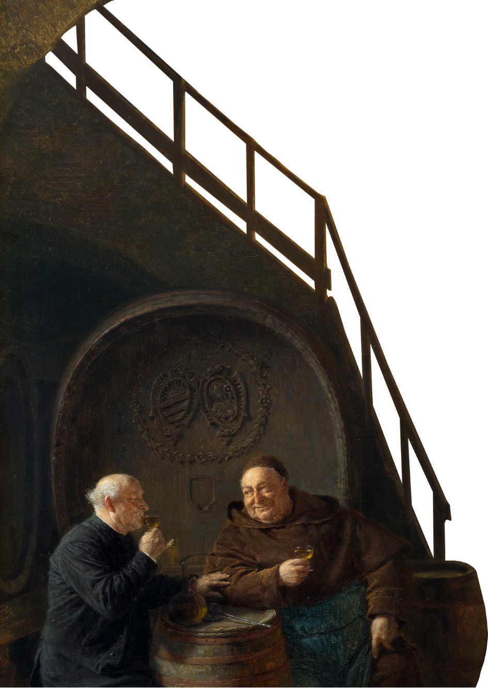

Munkenes Jul
En julehistorie fra Øm Kloster
Munkene ankommer

Øm Klosters historie er gammel, og går helt tilbage til 1172, hvor munke fra Cistercienserordenen første gang ankom til Øm.
Cistercienserordenen var en udspringer af den oprindelige Benediktinerorden, der har rødder helt tilbage til 500-tallets Romerrige, hvor Benedikt af Nursia (ca. 480-547) grundlagde ordenen. I 1100 godkendte paven Cistercienserordenens vedtægter, og munkene levede efter Benedikts regel, der beskriver den livsform, munkene bør have i deres fælles søgen efter Gud. Bøn, studier og arbejde er centrale begreber i Benedikts regel, ligesom fattigdom, lydighed, cølibat og ydmyghed også er af største betydning.
Op gennem middelalderen voksede Cistercienserordenen til den mest betydningsfulde klosterorden i Europa, og allerede inden år 1200 fandtes der ni munkeklostre i Danmark.
Øm Klosters historie er gammel, og går helt tilbage til 1172, hvor munke fra Cistercienserordenen første gang ankom til Øm. Cistercienserordenen var en udspringer af den oprindelige Benediktinerorden, der har rødder helt tilbage til 500-tallets Romerrige, hvor Benedikt af Nursia (ca. 480-547) grundlagde ordenen. I 1100 godkendte paven Cistercienserordenens vedtægter, og munkene levede efter Benedikts regel, der beskriver den livsform munkene bør have i deres fælles søgen efter Gud. Bøn, studier og arbejde er centrale begreber i Benedikts regel, ligesom fattig-dom, lydighed, cølibat og yd-myghed også er af største betydning. Op gennem middelalderen voksede Cistercienserordenen til den mest betydnings-fulde klosterorden i Europa, og allerede inden år 1200 fandtes der ni munkeklostre i Danmark.
Munkenes Julebryg
Munkene levede et enkelt og noget ensformigt liv med daglig bøn og hårdt arbejde, men også dengang bød julen på anerledes gode oplevelser og juletraditioner.
Øl var i middelalderen den foretrukne daglige drik. Vandkvaliteten var dårlig, og alene derfor foretrak man at drikke øl. Under bryggeprocessen blev vandet kogt, og selv om man ikke vidste hvad bakterier var, har man erfaret, at øl gav færre problemer med sygdom end vand. Munkene havde deres eget bryggeri på klostrene. Ordet bryggers stammer faktisk fra bryggeri, der var det rum, hvor kan bryggede øllen.
Det daglige øl var meget tyndt og med lav alkoholprocent og nok uden ret meget smag. Til jul bryggede man imidlertid en meget bedre øl – stærkere og mørkere og forbedret med honning og krydderier.
Den gode juleøl var utvivlsomt et af højdepunkterne for munkene omkring juletid.
Munkene levede et enkelt og noget ensformigt liv med daglig bøn og hårdt arbejde, men også dengang bød julen på anerledes gode oplevelser og juletraditioner.
Øl var i middelalderen den foretrukne daglige drik. Vandkvaliteten var dårlig, og alene derfor foretrak man at drikke øl. Under bryggeprocessen blev vandet kogt, og selv om man ikke vidste hvad bakterier var, har man erfaret, at øl gav færre problemer med sygdom end vand. Munkene havde deres eget bryggeri på klostrene. Ordet bryggers stammer faktisk fra bryggeri, der var det rum, hvor kan bryggede øllen.
Det daglige øl var meget tyndt og med lav alkoholprocent og nok uden ret meget smag. Til jul bryggede man imidlertid en meget bedre øl – stærkere og mørkere og forbedret med honning og krydderier. Den gode juleøl var utvivlsomt et af højdepunkterne for munkene omkring juletid.
Tilbage til rødderne
Efter 450 år er Klosterbryggeriet stolte af atter igen at kunne videreføre juletraditionen fra Øm Kloster.
Vores julebryg bygger på det samme ønske som munkenes; nemlig at lave en helt særlig øl, der passer til julen og kan give den rette julestemning med styrke og smag af herlige krydderier.

Efter 450 år er Klosterbryggeriet stolte af atter igen at kunne videreføre juletraditionen fra Øm Kloster. Vores julebryg bygger på det samme ønske som munkenes; nemlig at lave en helt særlig øl, der passer til julen og kan give den rette julestemning med styrke og smag af herlige krydderier.